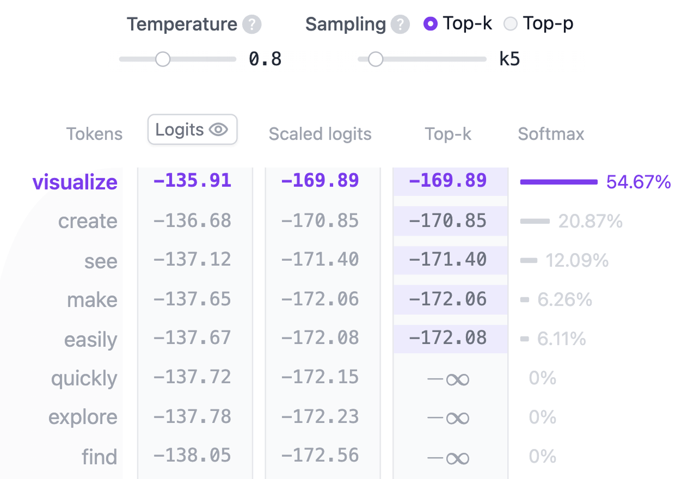

ما هو المحوِّل (Transformer)؟
المحوِّل (Transformer) هو بنية شبكة عصبية غيّرت جذريًا نهج الذكاء الاصطناعي. قُدِّم المحوِّل لأول مرة في الورقة البحثية الرائدة "Attention is All You Need" عام 2017، وأصبح منذ ذلك الحين البنية المفضّلة لنماذج التعلم العميق، حيث يشغّل نماذج توليد النصوص مثل GPT من OpenAI وLlama من Meta وGemini من Google. وإلى جانب النصوص، يُستخدم المحوِّل أيضًا في توليد الصوت والتعرف على الصور والتنبؤ ببنية البروتينات وحتى في ممارسة الألعاب، مما يدل على تعدد استخداماته في مجالات عديدة.
في جوهرها، تعمل نماذج المحوِّلات المولِّدة للنص على مبدأ التنبؤ بالكلمة التالية (next-word prediction): بالنظر إلى النص الذي يُدخله المستخدم، ما الكلمة التالية الأكثر احتمالًا بعد هذا الإدخال؟ يكمن الابتكار الجوهري وقوة المحوِّلات في استخدامها لآلية الانتباه الذاتي (self-attention)، التي تتيح لها معالجة التسلسلات كاملةً والتقاط العلاقات بعيدة المدى بفعالية أكبر من البنى السابقة.
تُعد عائلة نماذج GPT-2 من الأمثلة البارزة على المحوِّلات المولِّدة للنص. يعمل «شارح المحوِّلات» بواسطة نموذج GPT-2 (الصغير) الذي يضم 124 مليون مُعامِل. ورغم أنه ليس أحدث نماذج المحوِّلات أو أقواها، فإنه يشترك في كثير من المكونات والمبادئ المعمارية الموجودة في أحدث النماذج الحالية، مما يجعله نقطة انطلاق مثالية لفهم الأساسيات.
بنية المحوِّل (Transformer Architecture)
يتكوّن كل محوِّل مولِّد للنص من هذه المكونات الرئيسية الثلاثة:
- التضمين (Embedding): يُقسَّم النص المُدخل إلى وحدات أصغر تسمى الرموز (Tokens)، وقد تكون كلمات أو أجزاء كلمات. تُحوَّل هذه الرموز إلى متجهات عددية تسمى التضمينات (Embeddings)، تلتقط المعنى الدلالي للكلمات.
- كتلة المحوِّل (Transformer Block) هي وحدة البناء
الأساسية في النموذج التي تعالج البيانات المُدخلة وتحوِّلها. تتضمن كل كتلة:
- آلية الانتباه (Attention Mechanism)، المكوّن الجوهري في كتلة المحوِّل. تتيح للرموز التواصل مع الرموز الأخرى، فتلتقط المعلومات السياقية والعلاقات بين الكلمات.
- طبقة الشبكة العصبية متعددة الطبقات (MLP)، وهي شبكة تغذية أمامية تعمل على كل رمز على حدة. بينما تهدف طبقة الانتباه إلى توجيه المعلومات بين الرموز، فإن هدف MLP هو صقل تمثيل كل رمز.
- احتمالات المخرجات (Output Probabilities): تحوِّل الطبقة الخطية النهائية وطبقة softmax التضمينات المُعالجة إلى احتمالات، مما يمكّن النموذج من التنبؤ بالرمز التالي في التسلسل.
التضمين (Embedding)
لنفترض أنك تريد توليد نص باستخدام نموذج محوِّل. تضيف نصًا مثل هذا:
“Data visualization empowers users to”. يجب تحويل هذا الإدخال إلى صيغة يستطيع
النموذج فهمها ومعالجتها. وهنا يأتي دور التضمين: فهو يحوِّل النص إلى تمثيل عددي يمكن للنموذج
العمل به. لتحويل النص إلى تضمين، نحتاج إلى: 1) تقسيم الإدخال إلى رموز، 2) الحصول على تضمينات
الرموز، 3) إضافة معلومات الموضع، وأخيرًا 4) جمع ترميزات الرموز والمواضع للحصول على التضمين
النهائي. لنرَ كيف تُنفَّذ كل خطوة من هذه الخطوات.

الخطوة 1: التقسيم إلى رموز (Tokenization)
التقسيم إلى رموز هو عملية تجزئة النص المُدخل إلى قطع أصغر يسهل التعامل معها تسمى الرموز
(Tokens). قد يكون الرمز كلمة أو جزءًا من كلمة. تقابل الكلمتان "Data"
و"visualization" رمزين فريدين، بينما تُقسَّم كلمة
"empowers"
إلى رمزين. تُحدَّد المفردات الكاملة للرموز قبل تدريب النموذج: تضم مفردات GPT-2
50,257 رمزًا فريدًا. والآن بعد أن قسّمنا النص المُدخل إلى رموز ذات معرِّفات مميزة،
يمكننا الحصول على تمثيلها المتجهي من التضمينات.
الخطوة 2. تضمين الرموز (Token Embedding)
يمثّل GPT-2 (الصغير) كل رمز في المفردات بمتجه ذي 768 بُعدًا؛ ويعتمد بُعد المتجه على
النموذج. تُخزَّن متجهات التضمين هذه في مصفوفة بأبعاد (50,257, 768) تحتوي على
نحو 39 مليون مُعامِل! تتيح هذه المصفوفة الضخمة للنموذج إسناد معنى دلالي لكل رمز.
الخطوة 3. الترميز الموضعي (Positional Encoding)
تُرمِّز طبقة التضمين أيضًا معلومات عن موضع كل رمز في النص المُدخل. تستخدم النماذج المختلفة طرقًا متنوعة للترميز الموضعي. يدرّب GPT-2 مصفوفة الترميز الموضعي الخاصة به من الصفر، مدمجًا إياها مباشرة في عملية التدريب.
الخطوة 4. التضمين النهائي (Final Embedding)
أخيرًا، نجمع ترميزات الرموز والترميزات الموضعية للحصول على تمثيل التضمين النهائي. يلتقط هذا التمثيل المُجمَّع المعنى الدلالي للرموز وموضعها في تسلسل الإدخال معًا.
كتلة المحوِّل (Transformer Block)
يكمن جوهر معالجة المحوِّل في كتلة المحوِّل، التي تضم الانتباه الذاتي متعدد الرؤوس وطبقة
الشبكة العصبية متعددة الطبقات (MLP). تتكون معظم النماذج من عدة كتل من هذا النوع مكدَّسة
تسلسليًا واحدة تلو الأخرى. تتطور تمثيلات الرموز عبر الطبقات، من الكتلة الأولى إلى الأخيرة،
مما يتيح للنموذج بناء فهم دقيق لكل رمز. يؤدي هذا النهج الطبقي إلى تمثيلات أعلى مستوى
للإدخال. يتكون نموذج GPT-2 (الصغير) الذي ندرسه من 12 كتلة من هذا النوع.
الانتباه الذاتي متعدد الرؤوس (Multi-Head Self-Attention)
تمكِّن آلية الانتباه الذاتي النموذج من التركيز على الأجزاء المهمة من تسلسل الإدخال، مما يتيح له التقاط العلاقات والارتباطات المعقدة داخل البيانات. لنستعرض كيفية حساب هذا الانتباه الذاتي خطوة بخطوة.
الخطوة 1: مصفوفات الاستعلام (Query) والمفتاح (Key) والقيمة (Value)

يُحوَّل متجه التضمين لكل رمز إلى ثلاثة متجهات: الاستعلام (Q) والمفتاح (K) والقيمة (V). تُشتق هذه المتجهات بضرب مصفوفة تضمين الإدخال في مصفوفات أوزان مُتعلَّمة لكل من Q وK وV. وإليك تشبيهًا بالبحث في الويب يساعدنا على بناء حدس حول هذه المصفوفات:
- الاستعلام (Query) هو نص البحث الذي تكتبه في شريط محرك البحث. إنه الرمز الذي تريد «إيجاد مزيد من المعلومات عنه».
- المفتاح (Key) هو عنوان كل صفحة ويب في نافذة نتائج البحث. يمثّل الرموز المحتملة التي يمكن للاستعلام الانتباه إليها.
- القيمة (Value) هي المحتوى الفعلي لصفحات الويب المعروضة. بعد أن طابقنا مصطلح البحث المناسب (الاستعلام) مع النتائج ذات الصلة (المفتاح)، نريد الحصول على محتوى (القيمة) الصفحات الأكثر صلة.
باستخدام قيم QKV هذه، يستطيع النموذج حساب درجات الانتباه التي تحدد مقدار التركيز الذي ينبغي أن يحظى به كل رمز عند توليد التنبؤات.
الخطوة 2: التقسيم إلى رؤوس متعددة (Multi-Head Splitting)
تُقسَّم متجهات الاستعلام والمفتاح
والقيمة
إلى عدة رؤوس — في حالة GPT-2 (الصغير)، إلى
12 رأسًا. يعالج كل رأس جزءًا من التضمينات على نحو مستقل، ملتقطًا علاقات نحوية
ودلالية مختلفة. يسهّل هذا التصميم التعلم المتوازي لسمات لغوية متنوعة، مما يعزز القدرة
التمثيلية للنموذج.
الخطوة 3: الانتباه الذاتي المُقنَّع (Masked Self-Attention)
في كل رأس، نُجري حسابات الانتباه الذاتي المُقنَّع. تتيح هذه الآلية للنموذج توليد التسلسلات بالتركيز على الأجزاء المهمة من الإدخال مع منع الوصول إلى الرموز المستقبلية.

- درجة الانتباه (Attention Score): يحدد الضرب النقطي لمصفوفتَي الاستعلام والمفتاح مدى توافق كل استعلام مع كل مفتاح، منتجًا مصفوفة مربعة تعكس العلاقة بين جميع رموز الإدخال.
- التقنيع (Masking): يُطبَّق قناع على المثلث العلوي من مصفوفة الانتباه لمنع النموذج من الوصول إلى الرموز المستقبلية، بتعيين هذه القيم إلى سالب اللانهاية. يجب أن يتعلم النموذج كيفية التنبؤ بالرمز التالي دون «اختلاس النظر» إلى المستقبل.
- Softmax: بعد التقنيع، تُحوَّل درجة الانتباه إلى احتمال بواسطة عملية softmax التي تأخذ الدالة الأسية لكل درجة انتباه. يبلغ مجموع كل صف في المصفوفة واحدًا، ويشير إلى مدى صلة كل رمز من الرموز السابقة له.
الخطوة 4: المخرجات والدمج (Output and Concatenation)
يستخدم النموذج درجات الانتباه الذاتي المُقنَّع ويضربها في مصفوفة
القيمة للحصول على
المخرجات النهائية
لآلية الانتباه الذاتي. يمتلك GPT-2 12 رأس انتباه ذاتي، يلتقط كل منها علاقات
مختلفة بين الرموز. تُدمَج مخرجات هذه الرؤوس وتُمرَّر عبر إسقاط خطي.
الشبكة العصبية متعددة الطبقات (MLP: Multi-Layer Perceptron)

بعد أن تلتقط رؤوس الانتباه الذاتي المتعددة العلاقات المتنوعة بين رموز الإدخال، تُمرَّر
المخرجات المدموجة عبر طبقة الشبكة العصبية متعددة الطبقات (MLP) لتعزيز القدرة التمثيلية
للنموذج. تتكون كتلة MLP من تحويلين خطيين بينهما دالة تفعيل GELU. يزيد التحويل الخطي الأول
أبعاد الإدخال أربعة أضعاف من 768
إلى 3072. ويعيد التحويل الخطي الثاني الأبعاد إلى حجمها الأصلي
768، مما يضمن أن تتلقى الطبقات اللاحقة مدخلات ذات أبعاد متسقة. وعلى خلاف آلية
الانتباه الذاتي، تعالج MLP الرموز على نحو مستقل، وتكتفي بنقلها من تمثيل إلى آخر.
احتمالات المخرجات (Output Probabilities)
بعد معالجة الإدخال عبر جميع كتل المحوِّل، تُمرَّر المخرجات عبر الطبقة الخطية النهائية
لتجهيزها للتنبؤ بالرمز. تُسقِط هذه الطبقة التمثيلات النهائية في فضاء ذي
50,257
بُعدًا، حيث يكون لكل رمز في المفردات قيمة مقابلة تسمى
logit. يمكن لأي رمز أن يكون الكلمة التالية، لذا تتيح لنا هذه العملية ببساطة
ترتيب هذه الرموز حسب احتمال كونها تلك الكلمة التالية. ثم نطبّق دالة softmax لتحويل اللوجيتات
إلى توزيع احتمالي مجموعه واحد. وهذا يتيح لنا أخذ عينة للرمز التالي بناءً على احتماله.

الخطوة الأخيرة هي توليد الرمز التالي بأخذ عينة من هذا التوزيع. يؤدي المُعامِل الفائق
temperature
(درجة الحرارة) دورًا حاسمًا في هذه العملية. ومن الناحية الرياضية، إنها عملية بسيطة جدًا: تُقسم
لوجيتات مخرجات النموذج ببساطة على قيمة
temperature:
temperature = 1: قسمة اللوجيتات على واحد لا تؤثر في مخرجات softmax.temperature < 1: درجة الحرارة المنخفضة تجعل النموذج أكثر ثقة وحسمًا عبر شحذ التوزيع الاحتمالي، مما يؤدي إلى مخرجات أكثر قابلية للتنبؤ.temperature > 1: درجة الحرارة المرتفعة تنتج توزيعًا احتماليًا أكثر ليونة، مما يسمح بمزيد من العشوائية في النص المولَّد — وهو ما يسميه البعض «إبداع» النموذج.
إضافة إلى ذلك، يمكن ضبط عملية أخذ العينات بدقة أكبر باستخدام مُعامِلَي top-k
وtop-p:
top-k sampling: يحصر الرموز المرشحة في أعلى k رمزًا من حيث الاحتمال، مستبعدًا الخيارات الأقل ترجيحًا.top-p sampling: يأخذ في الاعتبار أصغر مجموعة من الرموز يتجاوز مجموع احتمالاتها التراكمي العتبة p، مما يضمن إسهام الرموز الأكثر ترجيحًا فقط مع السماح بالتنوع في الوقت نفسه.
بضبط temperature وtop-k وtop-p، يمكنك الموازنة بين
مخرجات حاسمة وأخرى متنوعة، بما يلائم سلوك النموذج مع احتياجاتك الخاصة.
سمات معمارية متقدمة (Advanced Architectural Features)
هناك عدة سمات معمارية متقدمة تعزز أداء نماذج المحوِّلات. ورغم أهميتها للأداء العام للنموذج، فإنها ليست بالأهمية نفسها لفهم المفاهيم الجوهرية للبنية. تُعد تسوية الطبقة (Layer Normalization) والإسقاط (Dropout) والوصلات المتبقية (Residual Connections) مكونات حاسمة في نماذج المحوِّلات، لا سيما خلال مرحلة التدريب. تعمل تسوية الطبقة على استقرار التدريب وتساعد النموذج على التقارب أسرع. ويمنع الإسقاط فرط التخصيص عبر تعطيل الخلايا العصبية عشوائيًا. أما الوصلات المتبقية فتتيح تدفق التدرجات مباشرة عبر الشبكة وتساعد على تفادي مشكلة تلاشي التدرج.
تسوية الطبقة (Layer Normalization)
تساعد تسوية الطبقة على استقرار عملية التدريب وتحسّن التقارب. تعمل عبر تسوية المدخلات على امتداد السمات، بما يضمن اتساق متوسط التفعيلات وتباينها. تساعد هذه التسوية على التخفيف من المشكلات المرتبطة بالانزياح المتغاير الداخلي، مما يتيح للنموذج التعلم بفعالية أكبر ويقلل الحساسية للأوزان الأولية. تُطبَّق تسوية الطبقة مرتين في كل كتلة محوِّل: مرة قبل آلية الانتباه الذاتي ومرة قبل طبقة MLP.
الإسقاط (Dropout)
الإسقاط تقنية تنظيم تُستخدم لمنع فرط التخصيص في الشبكات العصبية عبر تعيين جزء من أوزان النموذج عشوائيًا إلى الصفر أثناء التدريب. يشجع هذا النموذج على تعلم سمات أكثر متانة ويقلل الاعتماد على خلايا عصبية بعينها، مما يساعد الشبكة على التعميم بشكل أفضل على بيانات جديدة لم ترها من قبل. يُعطَّل الإسقاط أثناء استدلال النموذج، وهذا يعني في جوهره أننا نستخدم مجموعة من الشبكات الفرعية المدرَّبة، مما يؤدي إلى أداء أفضل للنموذج.
الوصلات المتبقية (Residual Connections)
قُدِّمت الوصلات المتبقية لأول مرة في نموذج ResNet عام 2015. أحدث هذا الابتكار المعماري ثورة في التعلم العميق بتمكينه من تدريب شبكات عصبية عميقة جدًا. الوصلات المتبقية في جوهرها اختصارات تتجاوز طبقة أو أكثر، بإضافة مُدخل الطبقة إلى مُخرجها. يساعد هذا على التخفيف من مشكلة تلاشي التدرج، مما يسهّل تدريب الشبكات العميقة التي تتكدس فيها عدة كتل محوِّل فوق بعضها. في GPT-2، تُستخدم الوصلات المتبقية مرتين داخل كل كتلة محوِّل: مرة قبل MLP ومرة بعدها، بما يضمن تدفق التدرجات بسهولة أكبر وحصول الطبقات الأولى على تحديثات كافية أثناء الانتشار الخلفي.
الميزات التفاعلية (Interactive Features)
صُمم «شارح المحوِّلات» ليكون تفاعليًا ويتيح لك استكشاف الآليات الداخلية للمحوِّل. إليك بعض الميزات التفاعلية التي يمكنك تجربتها:
- أدخِل نصك الخاص لترى كيف يعالجه النموذج ويتنبأ بالكلمة التالية. استكشف أوزان الانتباه والحسابات الوسيطة، وشاهد كيف تُحسب احتمالات المخرجات النهائية. (يجب أن يكون النص المُدخل باللغة الإنجليزية، لأن GPT-2 نموذج مدرَّب على اللغة الإنجليزية.)
- استخدم شريط درجة الحرارة (Temperature) للتحكم في عشوائية تنبؤات النموذج. استكشف كيف يمكنك جعل مخرجات النموذج أكثر حسمًا أو أكثر إبداعًا بتغيير قيمة درجة الحرارة.
- اختر طريقتَي أخذ العينات top-k وtop-p لضبط سلوك أخذ العينات أثناء الاستدلال. جرّب قيمًا مختلفة وشاهد كيف يتغير التوزيع الاحتمالي ويؤثر في تنبؤات النموذج.
- تفاعل مع خرائط الانتباه لترى كيف يركّز النموذج على الرموز المختلفة في تسلسل الإدخال. مرِّر المؤشر فوق الرموز لإبراز أوزان انتباهها، واستكشف كيف يلتقط النموذج السياق والعلاقات بين الكلمات.
الشرح المرئي (Video Tutorial)
كيف نُفِّذ «شارح المحوِّلات»؟
يعرض «شارح المحوِّلات» نموذج GPT-2 (الصغير) يعمل مباشرة في المتصفح. هذا النموذج مشتق من تنفيذ PyTorch لنموذج GPT في مشروع nanoGPT لأندريه كارباثي (Andrej Karpathy)، وجرى تحويله إلى ONNX Runtime ليعمل بسلاسة داخل المتصفح. بُنيت الواجهة باستخدام JavaScript، مع Svelte إطارًا للواجهة الأمامية وD3.js لإنشاء التصورات المرئية الديناميكية. تُحدَّث القيم العددية مباشرة تبعًا لإدخال المستخدم.
من طوّر «شارح المحوِّلات»؟
أنشأ «شارح المحوِّلات» كلٌّ من Aeree Cho وGrace C. Kim وAlexander Karpekov وAlec Helbling وJay Wang وSeongmin Lee وBenjamin Hoover وPolo Chau في معهد جورجيا للتقنية (Georgia Institute of Technology).